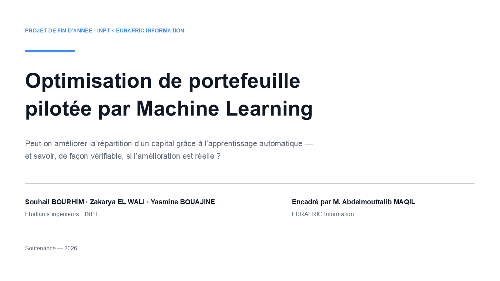
Bonjour. Nous présentons un projet de fin d’année mené à l’INPT avec EURAFRIC Information : un système qui répartit un capital entre actifs, et surtout un dispositif capable de dire si cette répartition est réellement meilleure.
Projet de fin d’année · INPT × EURAFRIC Information
Version vulgarisée, destinée à un jury sans bagage financier : chaque diapositive apparaît ici avec le texte à dire et son budget de parole. À lire avant la répétition.

Bonjour. Nous présentons un projet de fin d’année mené à l’INPT avec EURAFRIC Information : un système qui répartit un capital entre actifs, et surtout un dispositif capable de dire si cette répartition est réellement meilleure.
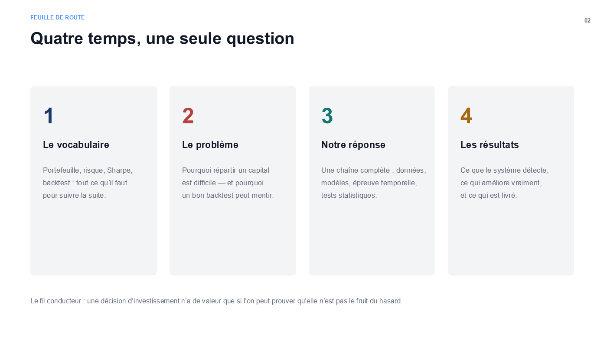
Quatre temps. Je commence par le vocabulaire, parce que la suite n’a de sens qu’avec quatre ou cinq mots précis. Puis le problème, notre réponse, les résultats.
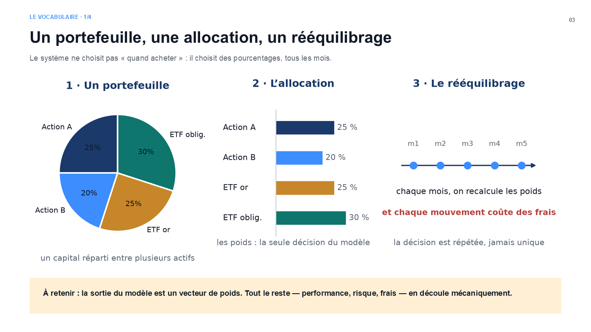
Un portefeuille, c’est un capital réparti entre plusieurs actifs. La seule chose que notre système décide, ce sont ces pourcentages — les poids. Il ne prédit pas un cours ; il répond à « combien mettre où ». Et il reprend cette décision chaque mois, ce qui coûte des frais à chaque fois.
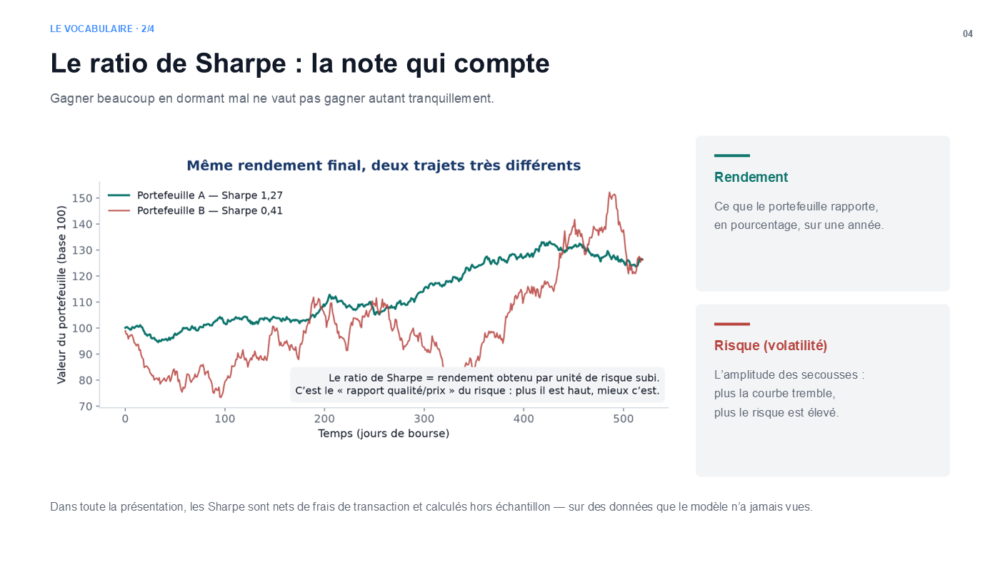
Pour comparer deux portefeuilles, le rendement seul ne suffit pas. Ces deux courbes finissent au même niveau, mais l’une tremble trois fois plus. Le ratio de Sharpe mesure exactement cela : le rendement obtenu par unité de risque subi. C’est la note qui servira à tout comparer.
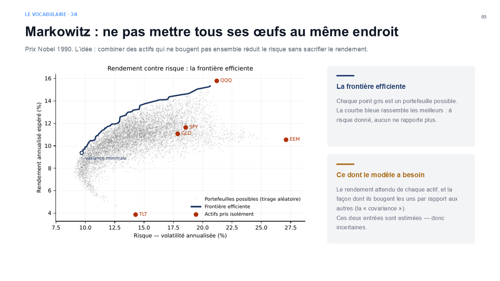
L’idée de Markowitz, prix Nobel : en combinant des actifs qui ne bougent pas ensemble, on réduit le risque sans perdre de rendement. La courbe bleue est l’ensemble des meilleurs compromis. Le point important : le modèle a besoin de deux ingrédients qu’on ne connaît jamais vraiment — il les estime.
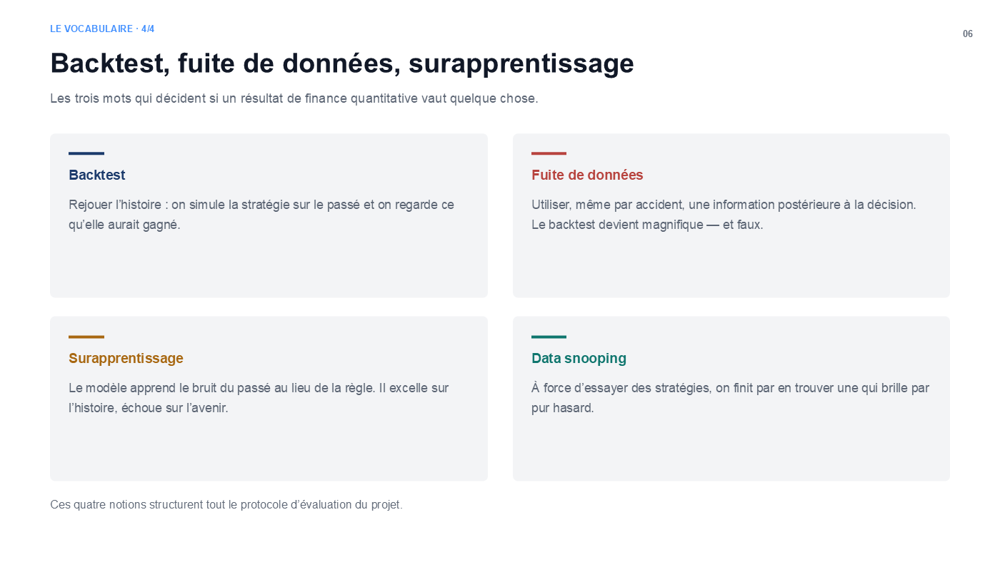
Quatre mots qui décident si un résultat vaut quelque chose. Un backtest rejoue l’histoire. Une fuite de données, c’est utiliser sans le vouloir une information du futur. Le surapprentissage, c’est apprendre le bruit. Et le data snooping : à force d’essayer, on finit toujours par trouver un gagnant apparent. Tout notre protocole est construit contre ces quatre risques.
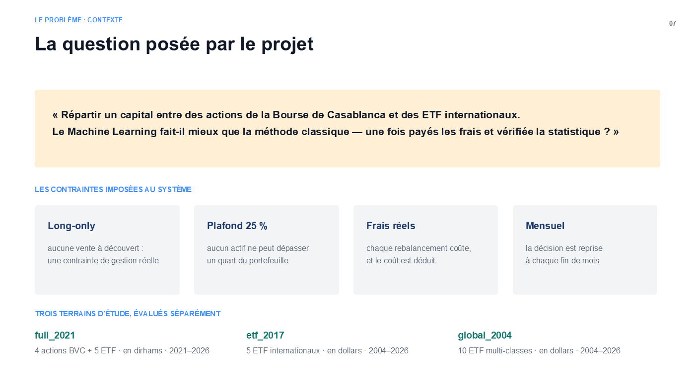
Voilà la question. Elle est posée sous contraintes réelles de gestion : pas de vente à découvert, aucun actif au-delà de 25 %, frais déduits, décision mensuelle. Et nous l’étudions sur trois terrains évalués séparément — nous ne mélangeons jamais des dirhams et des dollars.
Pourquoi c’est difficile. Quatre échecs connus de l’approche classique : elle prend des estimations bruitées pour des certitudes, elle suppose que demain ressemble à hier, elle s’effondre en crise, et elle se laisse flatter par la répétition des essais. Chacun appelle une réponse technique précise — c’est notre plan de construction.
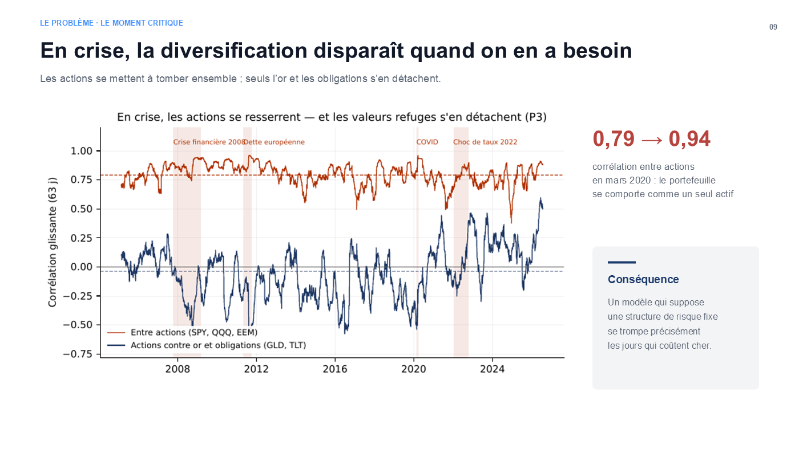
Une image pour le troisième échec. En temps normal, actions et valeurs refuges se comportent différemment. En crise, les actions se resserrent : la corrélation monte jusqu’à 0,94 en mars 2020. Le portefeuille se comporte alors comme un seul actif — la diversification disparaît quand on en a le plus besoin.
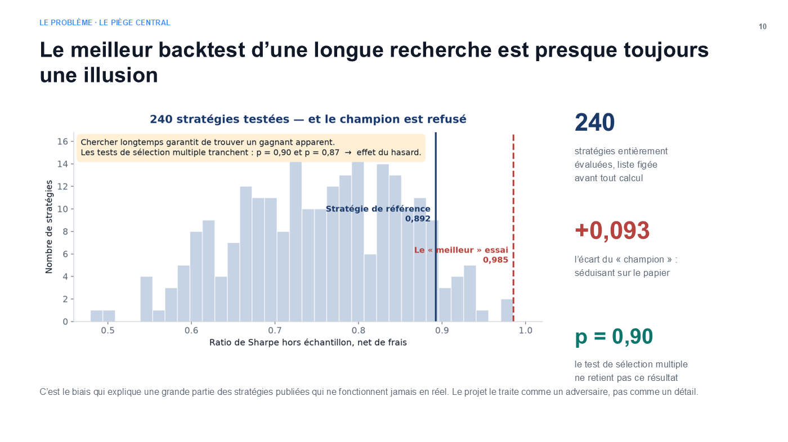
Le piège central, et c’est notre message principal. Nous avons évalué 240 stratégies, liste figée avant tout calcul. Le meilleur candidat dépasse la référence de 0,093 de Sharpe. Sur le papier, c’est publiable. Les tests de sélection multiple répondent p = 0,90 : c’est le maximum d’une recherche, pas une découverte. Sans ce test, nous aurions annoncé un faux résultat.
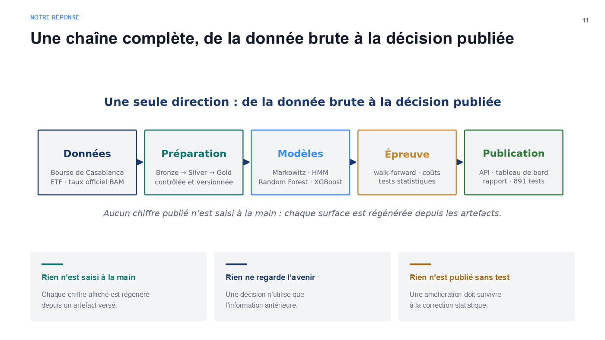
Notre réponse est une chaîne complète, à sens unique, de la donnée brute à la décision publiée. Trois règles la gouvernent : aucun chiffre saisi à la main, aucune décision qui regarde l’avenir, aucune affirmation sans test.
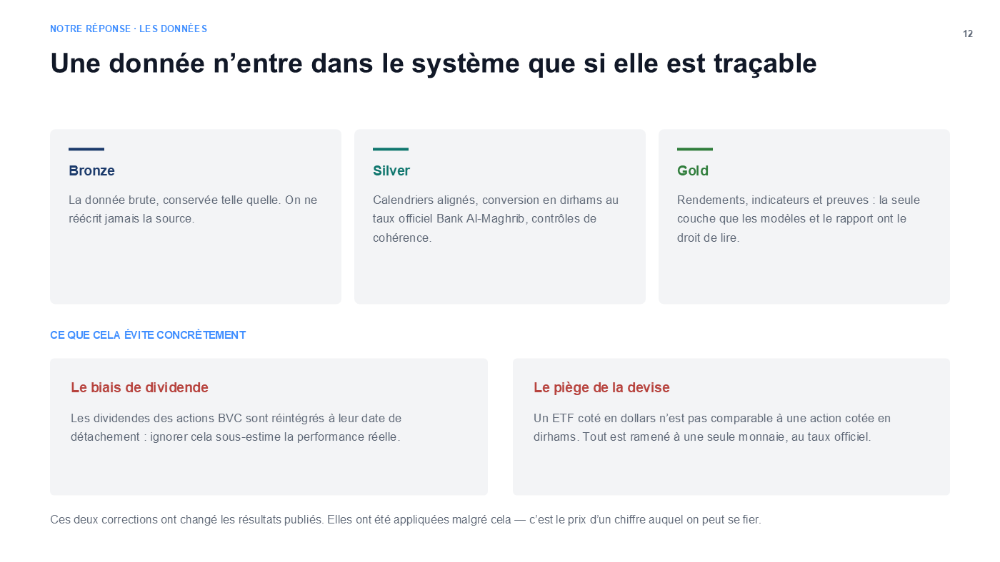
Les données d’abord. Trois couches : le brut qu’on ne réécrit jamais, une couche de mise en cohérence, et une couche finale — la seule que les modèles ont le droit de lire. Cela nous a permis de corriger deux biais réels : les dividendes de la Bourse de Casablanca, et la conversion en dirhams au taux officiel de Bank Al-Maghrib. Les deux ont changé nos résultats ; nous les avons appliqués quand même.
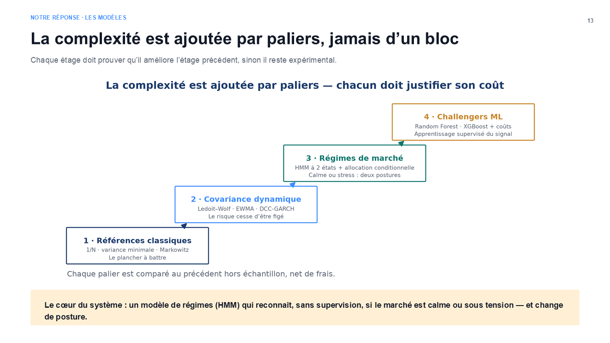
Les modèles, par paliers. On part des références classiques, on rend la structure de risque dynamique, puis on ajoute un modèle de régimes — un HMM qui reconnaît tout seul si le marché est calme ou sous tension — et enfin des challengers Random Forest et XGBoost. Chaque étage doit battre le précédent pour être retenu.
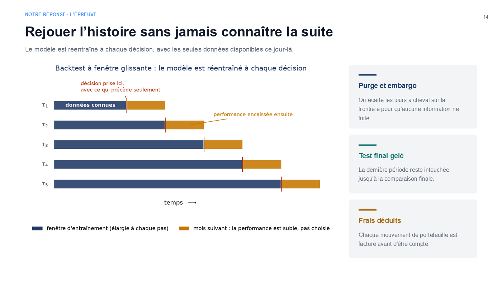
L’épreuve. À chaque date de décision, le modèle est réentraîné avec les seules données déjà disponibles, puis subit le mois suivant sans le connaître. On écarte les jours à cheval sur la frontière, on garde une dernière période totalement intacte, et chaque mouvement est facturé avant d’être compté.
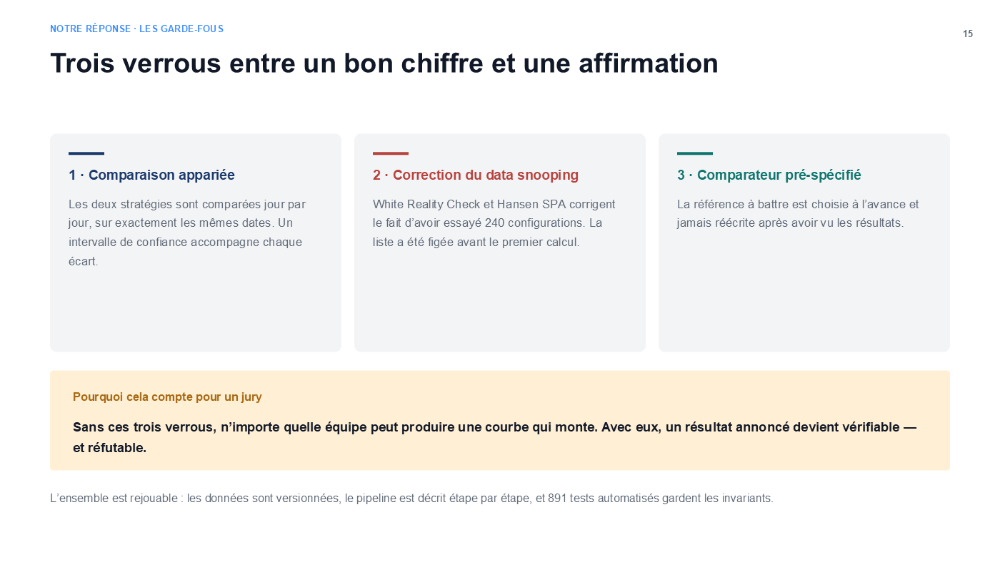
Trois verrous entre un bon chiffre et une affirmation : la comparaison est appariée jour par jour ; le fait d’avoir essayé 240 configurations est corrigé statistiquement ; et la référence à battre a été fixée à l’avance, jamais réécrite après coup. C’est ce qui rend nos résultats vérifiables.
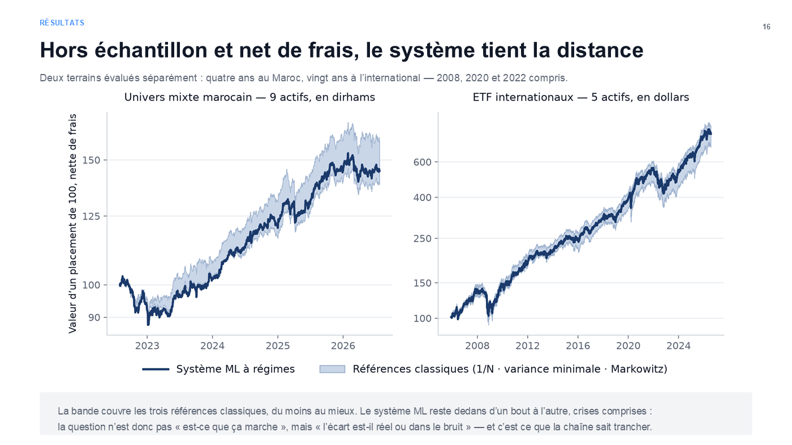
Les résultats, hors échantillon et nets de frais. Les stratégies se tiennent, y compris à travers 2008, 2020 et 2022 — aucune ne décroche. La vraie question n’est donc pas « est-ce que ça marche », mais « l’écart entre ces courbes est-il réel ». C’est exactement ce que la chaîne sait trancher.
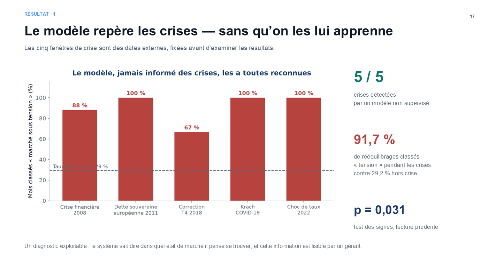
Premier résultat concret. Le modèle de régimes n’a jamais reçu la liste des crises : il apprend seul. Sur les cinq crises de la période, fixées à l’avance d’après des dates externes, il les a toutes reconnues. 92 % des mois de crise classés « sous tension », contre 29 % hors crise. C’est un diagnostic directement lisible par un gérant.
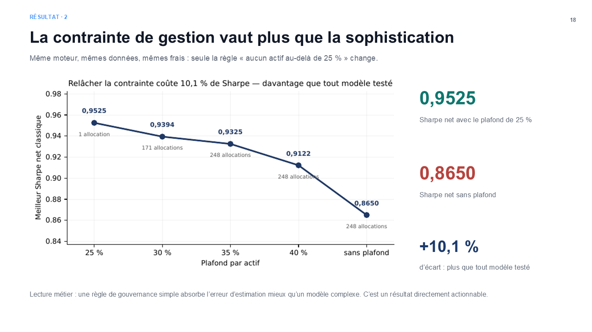
Deuxième résultat, et le plus actionnable. À moteur identique, relâcher la règle « aucun actif au-delà de 25 % » coûte 10 % de Sharpe. C’est davantage que l’effet de n’importe quel modèle testé. Une règle de gouvernance simple absorbe l’erreur d’estimation mieux que la sophistication.
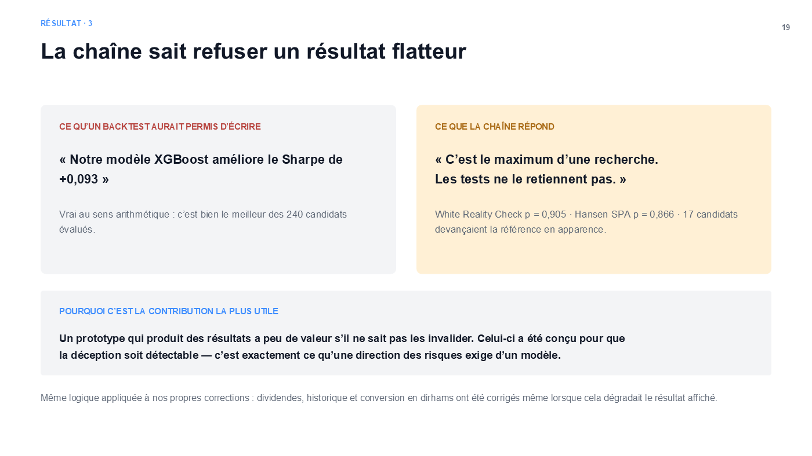
Troisième résultat, celui dont nous sommes le plus fiers. Avec un backtest seul, nous aurions écrit « notre XGBoost améliore le Sharpe de 0,093 ». Notre chaîne répond : c’est le maximum d’une recherche, les tests ne le retiennent pas. Un prototype qui ne sait pas invalider ses propres résultats n’a pas de valeur pour une direction des risques.
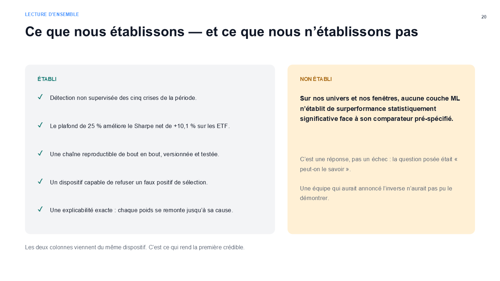
La lecture d’ensemble, en toute transparence. À gauche, ce que nous établissons. À droite, ce que nous n’établissons pas : sur nos univers et nos fenêtres, aucune couche ML ne démontre de surperformance significative face à son comparateur. C’est une réponse, pas un échec — la question posée était « peut-on le savoir », et nous savons. Les deux colonnes viennent du même dispositif : c’est ce qui rend la première crédible.
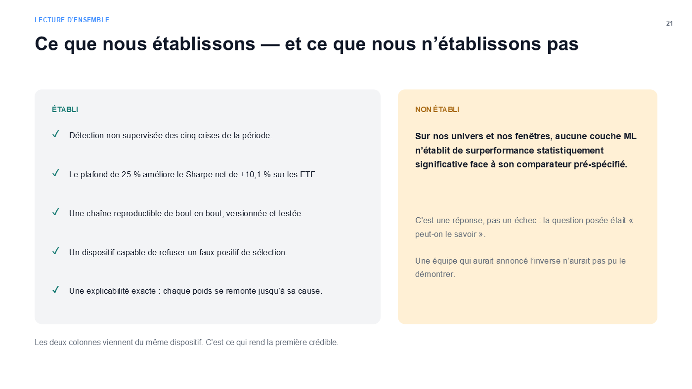
Le livrable n’est pas un notebook. Un tableau de bord, une API en lecture seule dont les chiffres sont lus depuis les artefacts, des données versionnées, une intégration continue, un conteneur, et près de 900 tests automatisés qui gardent les invariants.
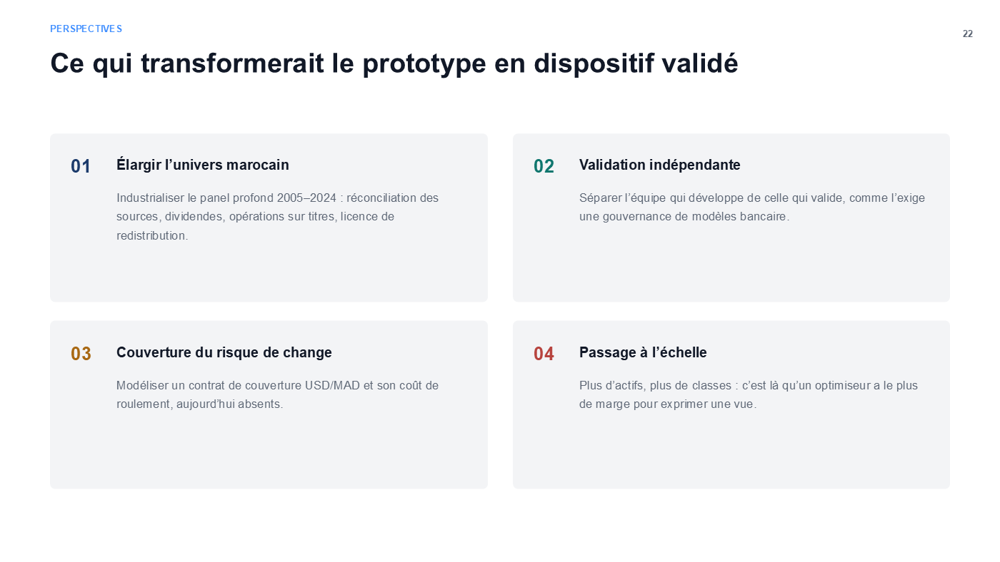
Ce qui reste. Élargir l’univers marocain, faire valider le dispositif par une équipe indépendante, modéliser la couverture du risque de change, et passer à l’échelle sur davantage d’actifs — c’est là qu’un optimiseur a le plus de marge pour exprimer une vue.
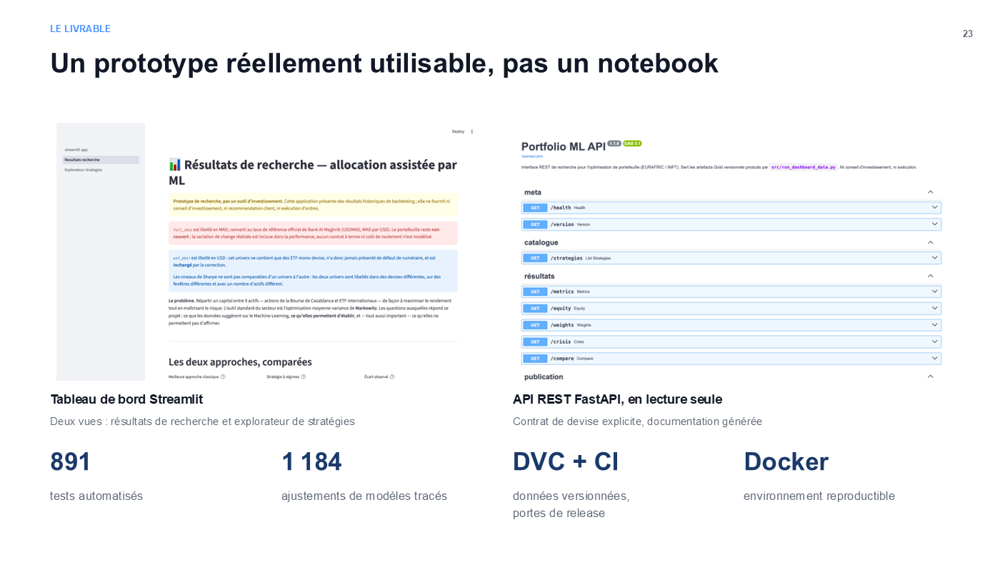
En conclusion : un système complet d’allocation, évalué sans tricher, capable de reconnaître les crises, de montrer ce qui améliore réellement un portefeuille — et de refuser ce qui n’est que du hasard. Merci de votre attention.
ANNEXE — à garder pour les questions. Les chiffres exacts par univers, et la mise en garde : les Sharpe ne se comparent pas d’un univers à l’autre (devises, fenêtres et nombres d’actifs différents).
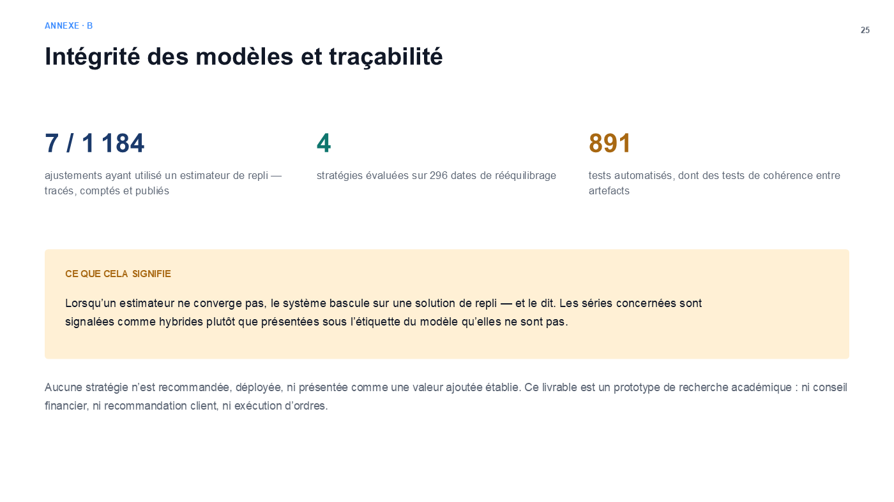
ANNEXE — intégrité et périmètre. 7 ajustements sur 1 184 ont utilisé un estimateur de repli : ils sont comptés et signalés comme hybrides plutôt que publiés sous une étiquette qu’ils ne méritent pas. Et le cadrage : prototype de recherche académique, aucune recommandation d’investissement.